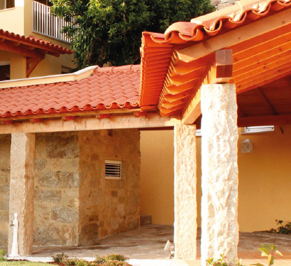
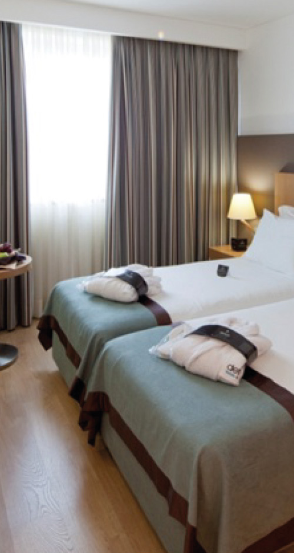
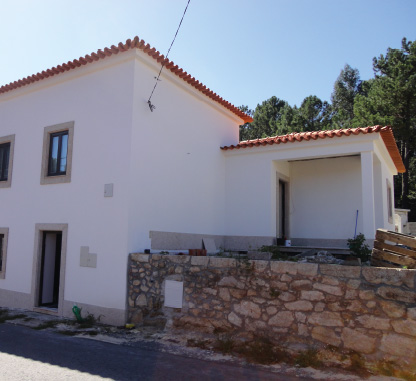
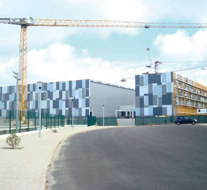

Dar entrada pelas áreas de atuação
A Empribuild apresenta várias áreas. Transformei essa lista numa escolha que acompanha a preparação do pedido, para o visitante situar o seu projeto.
Engenharia · Construção · Reabilitação
Construir, reabilitar ou transformar um interior. Explore as áreas de atuação da Empribuild e prepare o ponto de partida do seu projeto.
Explorar as áreasFotografias do portefólio oficial Empribuild


01 / Áreas de atuação
Selecione a área que mais se aproxima do que pretende. Pode alterar a escolha antes de preparar o resumo.
Área selecionada: Engenharia e construção
02 / Portefólio
Uma seleção das fotografias publicadas pela Empribuild. Pode explorar os exteriores ou o interior.


3 fotografias · Fonte: portefólio oficial Empribuild
03 / A primeira conversa
A área escolhida acompanha este resumo. Acrescente a fase atual e aquilo que gostaria de esclarecer primeiro.
Resumo local · nada foi enviado
Não é um orçamento, uma avaliação técnica ou um compromisso de execução.Uma proposta de Ricardo Almeida
As áreas e o portefólio já existem no site. A proposta aproxima esses elementos de uma pergunta concreta: o que pretende fazer e em que fase está.
A Empribuild apresenta várias áreas. Transformei essa lista numa escolha que acompanha a preparação do pedido, para o visitante situar o seu projeto.
Proponho filmar a equipa a acompanhar uma operação e a explicar uma decisão concreta de execução. O vídeo pode aproximar o trabalho em obra das fotografias do espaço apresentado.
O resumo junta área, fase e prioridade. Assim, a primeira conversa pode partir do que já existe e do que falta definir. Numa versão final, cada imagem pode acompanhar uma ficha com o âmbito da intervenção, validado pela vossa equipa.
Um exemplo do meu trabalho
Na Canvas Custom Furniture, filmei e editei a produção e integrei o filme no website. Esse trabalho mostra como posso aproximar o processo real da apresentação da empresa.
Ver o projeto CanvasRicardo Almeida · Vídeo e websites